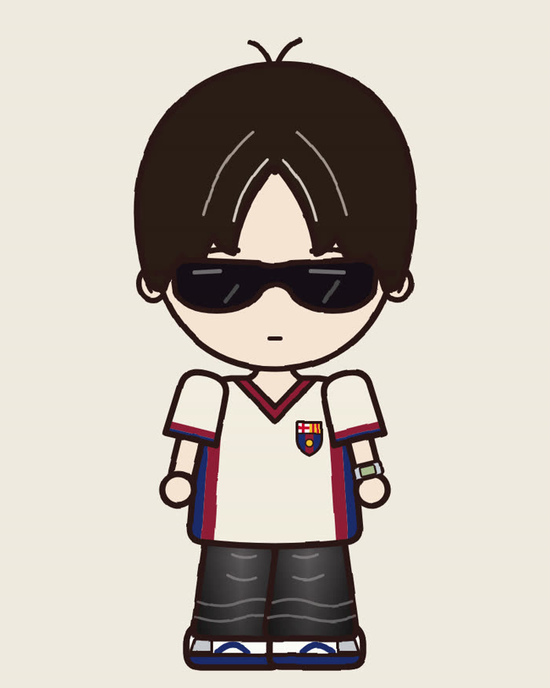
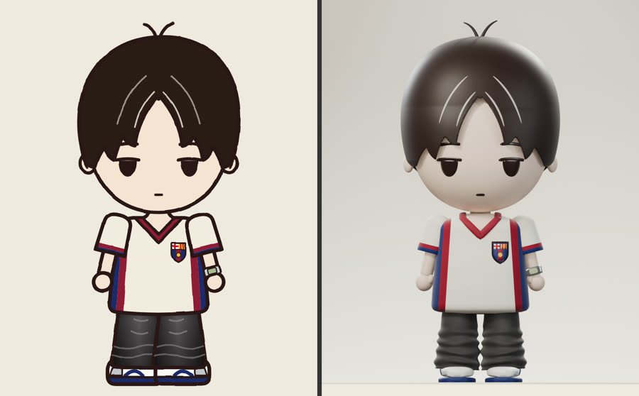
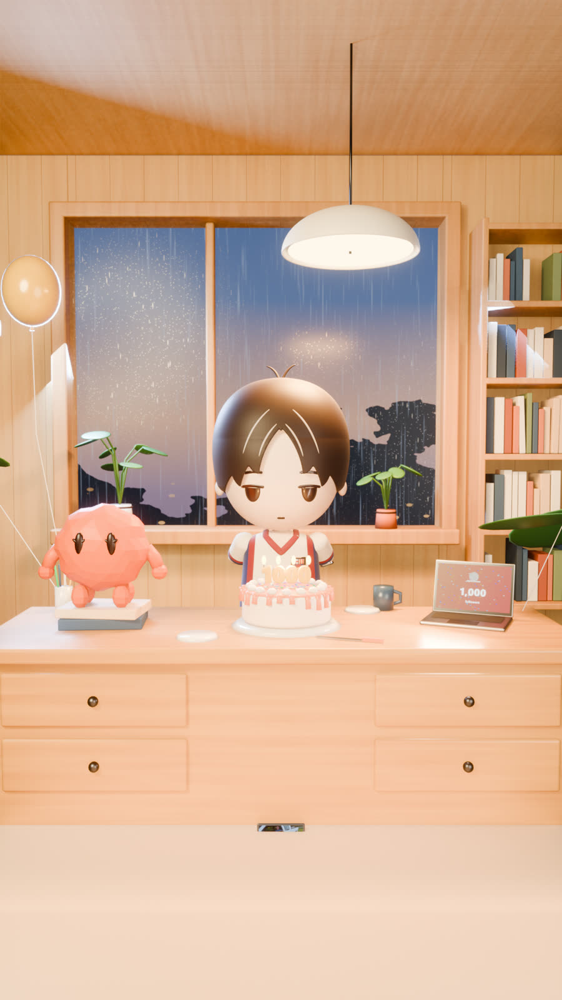
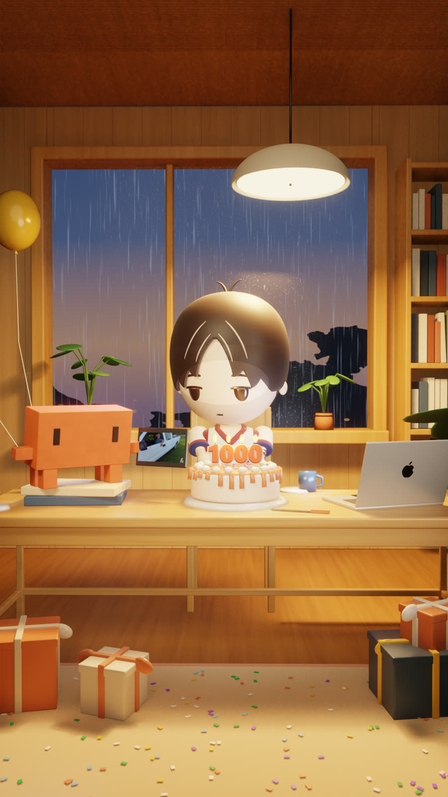
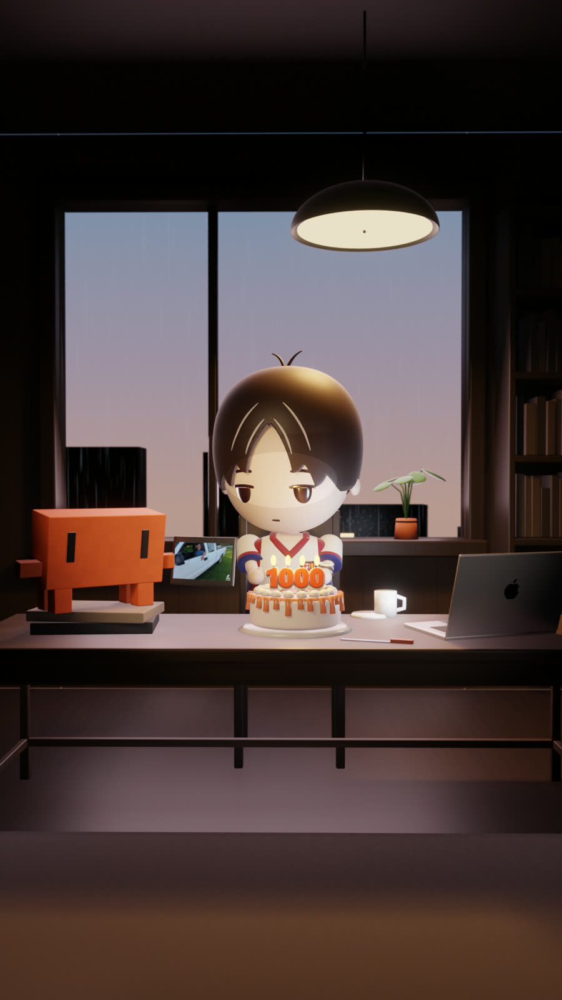
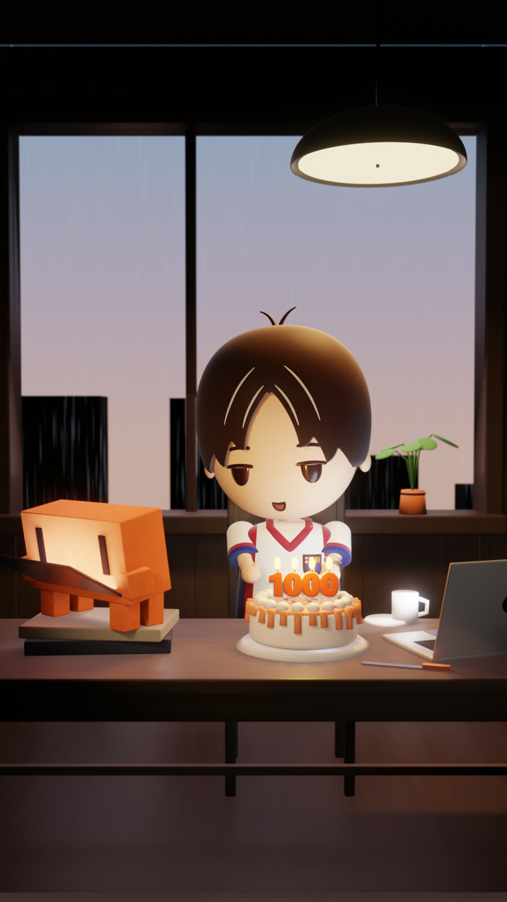
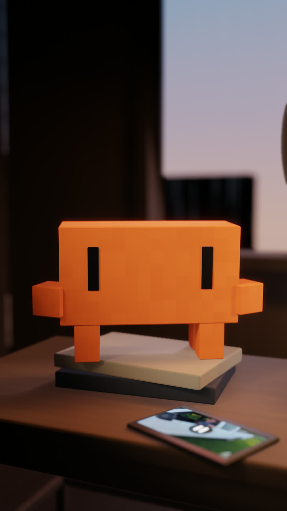

@jako.frames · behind the reel
A 40-second 3D reel, made in one day with Claude Code as the director. I wrote what I wanted in plain words; Claude and its helper agents built the character, the room, the animation and the subtitles in Blender. Here's the whole process, the prompts and the files, so you can make one too.
Claude ran two agents in parallel: one built the 3D character while the other built the room and the animation. Blender ran in the background the whole time. I never opened it.
I wrote the dialogue in my own words, then asked Claude to tighten it to under 40 seconds and split it into two blocks, one per character, with ElevenLabs v3 emotion tags.
[mildly surprised] Wait... what are those? [dry, deadpan] No. Not "with me". Just you. [chuckles] Nah, I'm kidding, bro. [warmly] Congrats. [deadpan] Wrong answer. [sincerely] You're gonna teach people how to use Claude properly. [sighs, smiling] Okay, okay... let's just eat the cake. [laughing] Get out. [laughs softly]
The first version used [excited] and ALL CAPS, and it sounded like shouting. Calm tags like [deadpan], [smiling] and [chuckles] make two characters at a desk sound natural. A blank line between lines gives you a clean pause to cut on.
Each character is one ElevenLabs file with all their lines in order. Claude transcribed both with Whisper, cut them at the silences and laid them into one dialogue track, with a timing file it later used for lip sync and subtitles.
The recording wins. ElevenLabs read one line as "No, not with you. Just me." instead of the script. Claude noticed it from the transcript and made the subtitles match what you actually hear.
My character started as a flat 2D kit. The first 3D attempt had an egg-shaped head and the wrong hair, and didn't look like me. For the rebuild I told Claude exactly what was wrong, and it built the head and hair straight from the 2D outlines, then compared front and back silhouettes until they overlapped about 98%.


"Make it look like me" gets you something generic. Give a measurable target ("the face is almost as wide as it is tall, the hair is a wide round helmet") and ask Claude to compare against the original and keep fixing until it matches.
I gave Claude a photo of a cozy study and turned it around: desk facing the camera, rainy evening window behind us, MacBook on the right, Claude on the left. Each round I sent one list of notes.



Words like "less bright" are vague. Four screenshots from a reel I liked fixed the look in one round: a dark room, a dusk sky, almost no props, light only on the characters, and a blurry background in close-ups.
The camera and acting rules I gave Claude. Every move is tied to a line, so the characters never just stand there.


Build a vertical 1080x1920 3D reel in Blender, under 40 s. Characters: [your character] and [second character] at a desk, facing camera. Audio: one voice file per character; split at silences, transcribe, and build one dialogue timeline. Camera: open wide with a slow push-in; then cut to whoever speaks, each with a slow zoom; end wide, pulling back. Acting: every gesture must match the words of the line. Write the action for each line in script.md before animating. Lip sync: open/close the mouth from the voice volume. Subtitles on the whole video, top-centre, white bold text in a soft grey box. First deliver a low-res preview with audio and subtitles. No final render until I approve it.
Never review on the final render. My last change (turning the tablet so only Claude sees it) cost one 85-minute re-render. Every earlier change only cost a few still frames.
The full input list. Nothing else was needed.
The look of the room (dark and calm, dusk window, blurry close-ups, grey subtitle boxes) came from this reel. Go watch it: instagram.com/reel/DemRcuaT-z_
Show, don't describe. A reference image fixes in one round what words take three rounds to fix.
Give measurable targets. Proportions, durations and frame sizes beat "make it nicer".
Preview cheap, render once. Stills and low-res previews for every decision, the full render only at the end.